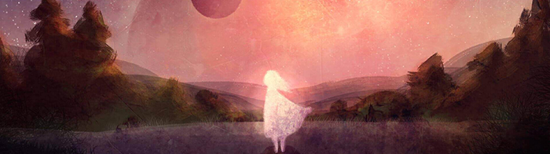

My name is Kateh, pronounced like kay-tuh with a soft T. I grew up for a time in Belgium where I received my nickname from my best friends in middle school there, and it has followed me into adulthood. Art is my passion, and design is my jam. I’m not a big fan of coding but I keep landing web contracts so I have to keep up. Some of my favourite games are Dragon Age, Child of Light, Spyro, Pokemon, Journey, Witcher, Horizon Zero Dawn, and Undertale. I moved to Vancouver for a couple of years to work in the video games industry but moved back to Ontario after the Vancouver housing market priced me out. Maybe I’ll try Montreal next.
Some of my hobbies include:
I secured my advanced graphic design diploma from Fanshawe College in 2014. For the last 4 years, I have freelanced as a graphic designer, web developer, digital illustrator, and game artist. Some of the highlights in my freelancing career has been developing the Blu-ray & Digital launch website for Sony’s Baby Driver, as well as releasing my first indie game title, Love is Dead. I worked as art director, concept artist, and 2D asset artist on Love is Dead, now available on Steam for PC & Mac.
I hope to fill in the gaps in my education with the interactive media design program, and I am particularly looking forward to learning programming languages outside of HTML/CSS, as well as motion graphics and UI/UX design. My gap in education in these three subjects has cost me either additional costs to outsource programmers, or lost opportunities to work on projects requiring knowledge in animation and UI/UX design in the video game industry.
My portfolio website can be found here
Soyoon Lee goes by the nickname Yoon and she's from Seoul, Korea. She is sweet and shy but isn't afraid to ask for help if she needs it, which is a skill that took me a long time to learn.